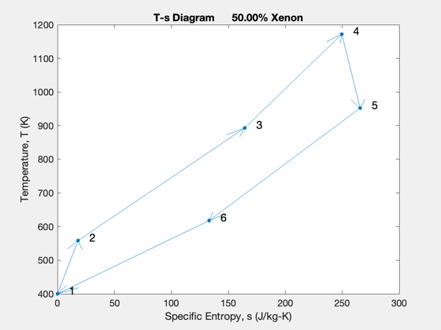
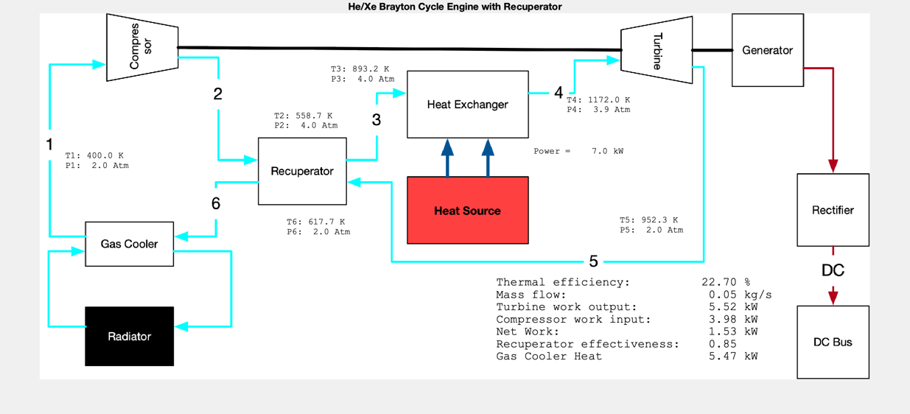
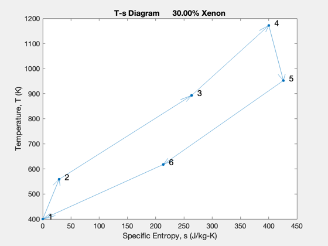

Contents
Brayton cycle heat engine design
Looks at a cycles with two different fluid combinations. Provides gamma, molecular weight and cP
Two choices of he/xe From a turbomachinery perspective
See also: CycleDesign, CreateLatexTable, DisplayLatexTable ------------------------------------------------------------------------
%-------------------------------------------------------------------------- % Copyright (c) 2023 Princeton Satellite Systems, Inc. % All rights reserved. %-------------------------------------------------------------------------- % Since 2023.1 %-------------------------------------------------------------------------- % Heat transfer parameters r = 0.1; % m h = 0.02; % m a = h*h; % pipe area, m^2 n = 2*pi*r/h; % number of pipes nC = 0.8; % compressor efficiency nT = 0.82; % turbine efficiency nR = 0.85; % Recuperator ratio heat = 7; % kW T1 = 400; % K, compressor inlet temperature P1 = 2; % atm, compressor inlet pressure pR = 2; % Compressor pressure ratio T4 = 1172; % K, turbine inlet temperature
Cycle design, higher Xenon fraction
fXenon = 0.5; % Mass fraction of Xenon in Xe/He mixture doPlot = true; [dOut,dP] = CycleDesign(fXenon,heat,T1,T4,P1,a,r,n,pR,nC,nT,nR,doPlot); set(gcf,'Name',sprintf('Brayton Cycle %10.2f%% Xenon',fXenon*100));
Lower Xenon fraction
fXenon = 0.3; doPlot = true; [dOut,dP] = CycleDesign(fXenon,heat,T1,T4,P1,a,r,n,pR,nC,nT,nR,doPlot); set(gcf,'Name',sprintf('Brayton Cycle %10.2f%% Xenon',fXenon*100)); k = 1; s = {}; s{k,1} = 'Recuperator effectiveness'; s{k,2} = sprintf('%12.2f',dOut.nr); k = k + 1; s{k,1} = 'Compressor efficiency'; s{k,2} = sprintf('%12.2f',dOut.nc); k = k + 1; s{k,1} = 'Turbine efficiency'; s{k,2} = sprintf('%12.2f',dOut.nt); k = k + 1; s{k,1} = 'Exchanger pressure drop'; s{k,2} = sprintf('%12.2f',dOut.nPX); k = k + 1; s{k,1} = 'Molecular weight'; s{k,2} = sprintf('%12.3f (kg/mole)',dOut.molWt); k = k + 1; s{k,1} = 'Specific heat'; s{k,2} = sprintf('%12.1f (J/kg-deg-K)',dOut.cP); k = k + 1; s{k,1} = 'Gamma'; s{k,2} = sprintf('%12.2f ',dOut.gamma); k = k + 1; CreateLatexTable(s,'CycleParameters'); DisplayLatexTable(s) %-------------------------------------- % $Date$ % $Id: da12d8257b9ec53a669b5aae2731f3f33403899f $
Recuperator effectiveness 0.85
Compressor efficiency 0.80
Turbine efficiency 0.82
Exchanger pressure drop 0.99
Molecular weight 0.042 (kg/mole)
Specific heat 495.7 (J/kg-deg-K)
Gamma 1.66
 